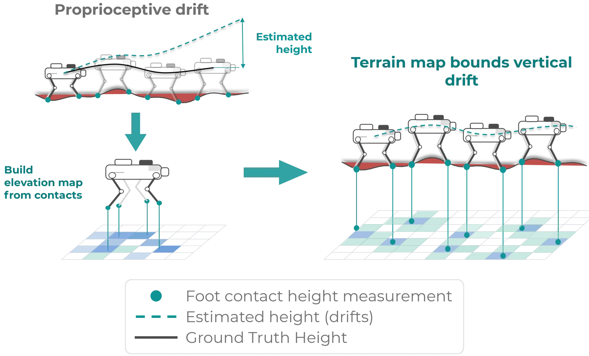
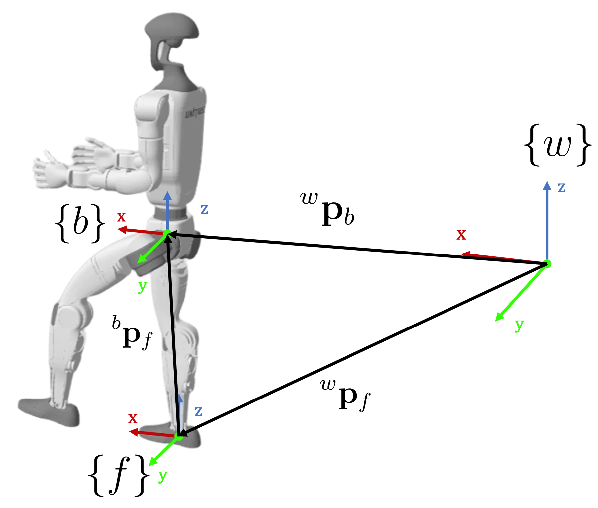
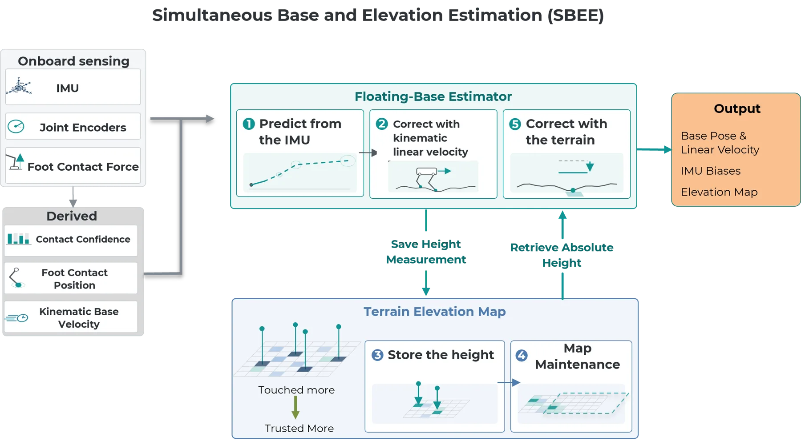
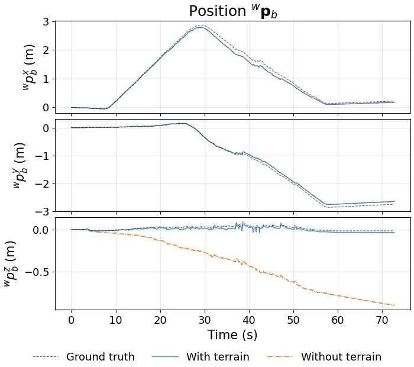
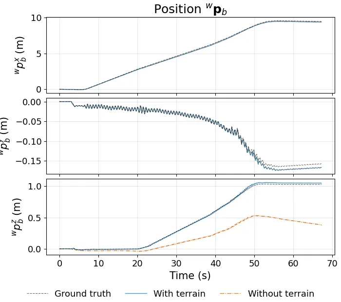
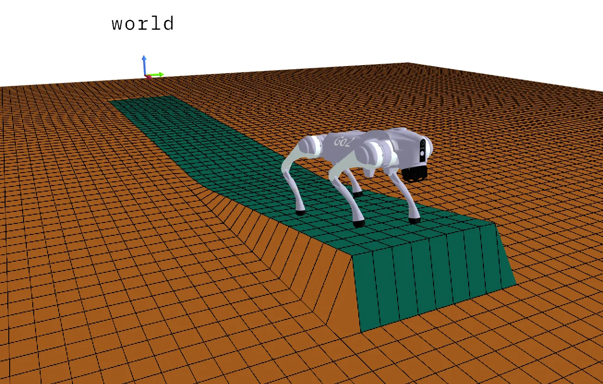

本体感知的基座与地形高程联合估计
Proprioceptive Simultaneous Base and Terrain Elevation Estimation for Legged Robot Locomotion
一句话：把走过的地面当路标，落脚写图、重访回灌，只修垂向位置，纯本体也能把高度漂移锚住。
ATE
RMSEz
cycle time
作者、单位与技术谱系 · Research context
作者与单位
研究脉络
- Bloesch 接触辅助本体估计方法基座关系：用腿运动学约束浮基状态、以接触点作为观测的经典路线，SBEE 保留其 IMU+运动学骨架。[SBEE 原文 §II-A]
- Contact-aided IEKF / Invariant Smoother方法上游关系：把不变滤波与接触约束结合；SBEE 改为固定维状态并用外部高程图替代接触状态增广。[SBEE 原文 §II-B]
- 本体高程建图方法上游关系：已有工作用接触事件建地形图但只服务步态/控制；SBEE 把图变成状态估计的修正源。[SBEE 原文 §II-C]
合作网络
- FORTH × VinDynamicsFORTH → VinDynamics关系：共同署名[arXiv 摘要页]
- SBEE → ANYmal-D GrandTourSBEE → ANYmal-D GrandTour Dataset关系：评测基准[SBEE 原文 §VII-C]
作者与单位来自论文首页；方法谱系来自相关工作章节的显式引用；未发现公开的导师或师生关系证据。
方法本质拆解 · What actually changed
是不是微调？
没有学习成分，既不是预训练也不是微调；全部是模型驱动的滤波与概率地图更新。接触置信度是解析式，噪声参数来自传感器标定与经验设置。
有没有额外约束？
核心约束是地形静态且不可形变，落脚高度被当作世界系观测；地图只通过单行 Schmidt–Kalman 增益修正垂向基座位置。接触置信度由垂直 GRF 归一化，打滑不在约束里。
推理/后端到底做了什么？
每个控制周期：IMU 传播 LI-EKF，腿部运动学给速度更新，稳定接触把高度样本写入高程网格，网格重定心/插值后把已观测单元作为垂向伪观测回灌。没有全局 BA，也没有回环检测，所谓回环是「踩回已建图单元」的隐式等价。
方法本质是什么？
本质是把不可观测的垂向位置锚在「走过的地面」上：地图是外部接触记忆，落脚是观测，重访是回环。它改变的是纯本体感知垂向漂移无界这一不确定性，靠高程图的方差加权把长期高度误差压住，同时用部分更新隔离地图错误。
输入是 IMU、关节编码器与足端力，落脚高度写入概率高程图，已建图单元再以方差加权垂向伪观测回灌 LI-EKF；改变的是垂向位置不可观测，靠地形记忆把长期高度漂移锚住。

桥接价值Bridge
桥接价值
这篇把「地形本身」当成持续性本体感知地标：每一步落脚给出一个高度观测，走过的地方形成一张带方差的高程图，再反过来给滤波器提供类似回环的垂向伪观测。它桥接的是纯本体感知状态估计与建图两条线——以前高程图多半是估计的产物，这里它变成修正源。对我们在 GNSS 拒止、视觉退化环境下的足式/多足平台，这是一条不依赖外参传感器的垂向漂移抑制思路。
方法与模块Method
方法摘要
框架由两部分组成：一个 M×M 的概率高程网格，用落脚接触置信度加权插入高度样本，并做邻域传播与反距离加权插值；一个定义在 SE2(3)×R6 上的左不变 EKF，用 IMU 传播、用腿部运动学速度更新。两者双向耦合：滤波器给出落脚世界位置，高程图更新；机器人踩回已建图区域时，图以 Schmidt–Kalman 部分更新只修垂向位置，不碰速度、姿态和零偏。接触置信度由垂直地面反力归一化得到，可替换为外部连续接触概率。
可迁移模块
第一是「地图作为外部接触记忆」：把接触状态从滤波状态里拿出来，状态维数不随腿数增长，这对多足/双足统一实现很实用。第二是 Schmidt–Kalman 标量部分更新：只允许地图修正垂向一行，错误地图最多把高度带偏，不会污染可观测的速度/姿态/零偏，这个安全边界可以直接搬到我们的因子图或 EKF 融合后端。第三是环形索引的 O(1) 重定心，适合嵌入式长时运行。

证据Evidence
关键证据与数字
在 ANYmal-D GrandTour 的 CYN-1 序列（296 m、约 520 s）上，SBEE 的 ATE 为 1.062 m，比最强基线 Invariant Smoother 的 1.363 m 低 22.1%，比 IEKF 的 1.406 m 低 24.4%，比 MUSE 的 2.269 m 低 53.2%；速度 RMSE 0.0758 m/s，也比 IS/IEKF 的 0.0815 低约 6.9%。MuJoCo 消融里，Go2 斜坡的垂向 RMSE 从 0.3547 m 降到 0.0129 m（-96.4%），崎岖地形从 0.5184 m 降到 0.0168 m（-96.8%），G1 双足从 0.2205 m 降到 0.0253 m（-88.5%）。
边界与下一步Limits & Next Step
边界与风险
收益集中在垂向：一米尺度平移 RPE 仍比 IEKF/IS 高约 18.9%/20.8%，单帧旋转 RPE 也高约 43%，说明它牺牲了部分短时平滑性换长时漂移。作者明确限制包括静态不可形变地形、只修垂向、以及基于垂直 GRF 的接触置信度无法检测打滑；软地或被踢动的物体会留下错误高度，直到重复踩踏修正。我们的待核验项：开源实现标注为接收后释放，当前无法复现；CYN-1 只一条序列，跨平台（轮足、外骨骼）和动态地形未测；与视觉/ LiDAR 高程图融合时的相关性处理未讨论。
下一步实验
最小实验是在我们现有的足式/手持序列上，把高程图替换成 LiDAR 或深度图建的局部高程，只保留「部分更新 + 方差加权」这一层，比较纯本体、纯外感、以及两者松耦合的垂向 ATE 与单帧 RPE。第二个实验是把接触置信度从垂直 GRF 换成足端 IMU 或关节力矩观测，专门在打滑/软地场景看错误高度是否还会被写进图。







